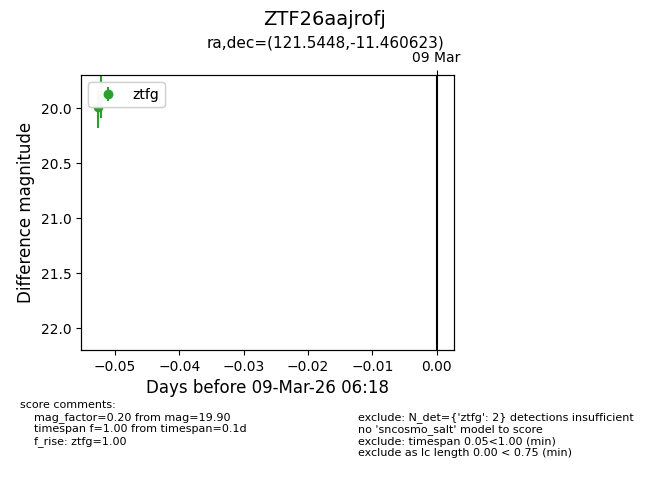
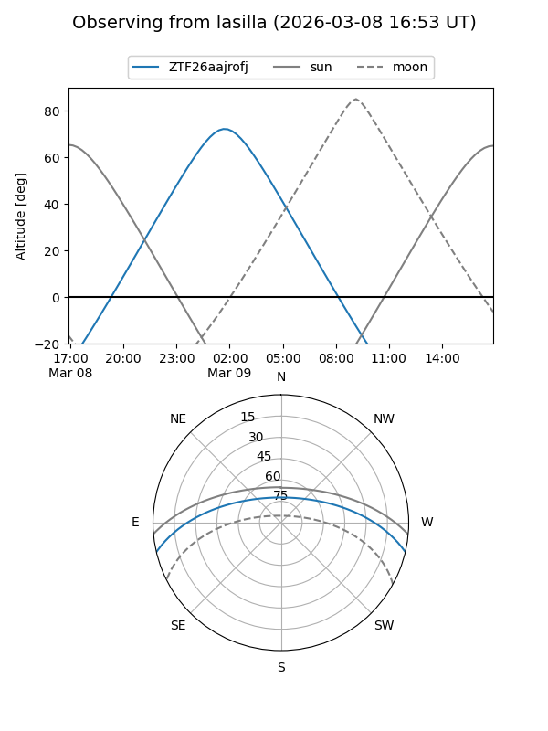
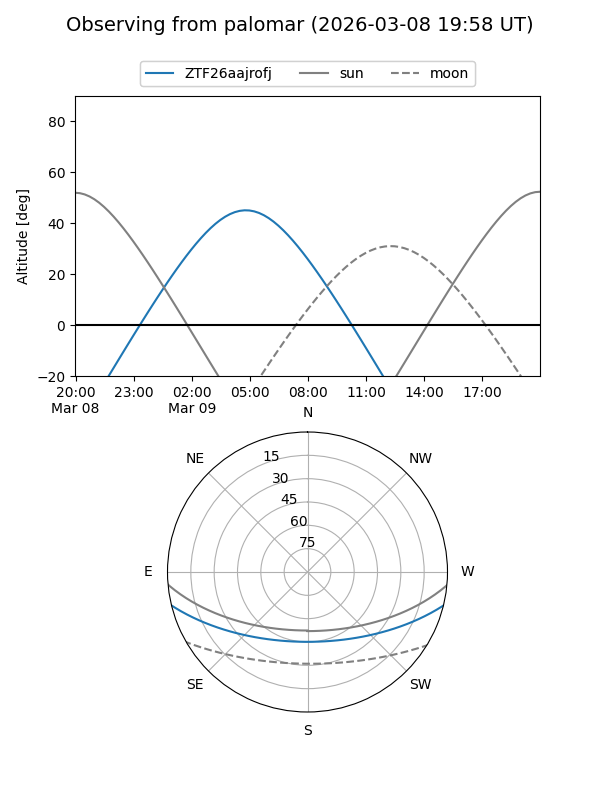

ZTF26aajrofj
Target ZTF26aajrofj at 2026-03-09 06:19
Aliases and brokers:
FINK: link
Lasair: link
ALeRCE: link
alt names
ZTF26aajrofj (ztf,fink_ztf)
Coordinates:
equatorial (ra, dec) = 121.5448,-11.46062
equatorial (HMS+DMS) = 08:06:10.76,-11:27:38.24
galactic (l, b) = (231.9502,+10.88509)
Flags:
Photometry:
last ztfg=19.90
2 ztfg detections
Lightcurve

Visibility


Additional plots